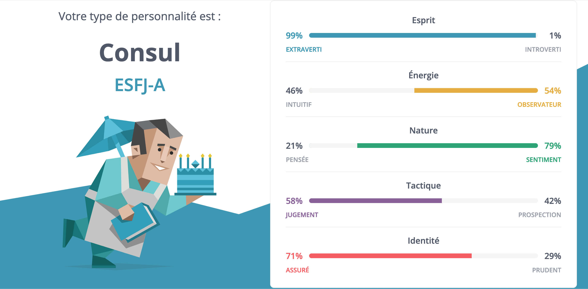

Fiche Romarin
Cet article annule et remplace tout ce qui a été dit sur Romarin.
Dans la version de Samare écrite du point de vue de Rena, Romarin était un personnage secondaire très important. Maintenant que la narration est plus proche d’Anelys, la profondeur de la personnalité et de la vie de Romarin seront moins abordées. Il reste néanmoins un allié primordial pour Rena et son optimiste guidera nos héros.
Biographie
Romarin est né dans une famille croyante et pratiquante du Grand Ouest, au-delà de la Capitale. À la naissance, il est baptisé Romain.
De nature curieuse, il cherche toujours à en savoir plus sur le monde et ses origines. Il ne se satisfait pas des explications religieuses. Il est bricoleur, touche à tout et très malin. Il adore trafiquer des objets électroniques pour leur trouver de nouvelles fonctions qu’il considère plus utile, comme transformer un aspirateur en distributeur de croquettes.
Son intérêt pour les sciences et sa soif de connaissances convainquent ses parents qu’il lui faut découvrir le monde pour réaliser qu’il n’y a que la foi comme réconfort. Ils lui fournissent donc une copieuse somme d’argent pour qu’il parte étudier à l’université capitaine. Il y passe une année durant laquelle il perd le peu de foi qui lui restait en Dieu et en les institutions. Il n’aime pas le mode de vie des capitains, ni leur façon d’utiliser la religion pour justifier leurs actions ou leurs inactions. Il entend parler de Samare et de son programme d’études ouvertes. C’est une aubaine pour lui. Il se sent emprisonné dans le cursus de technologie qu’il a choisi en arrivant à la Capitale. Sa curiosité du monde n’est pas assouvie. Il décide d’abandonner la faculté et intègre l’institut de Samare à l’âge de 19 ans, contre l’avis de sa famille qui le renie.
À son arrivée à Samare, chaque nouvel étudiant est confié à un tuteur qui le guide dans as découverte de la cité, dans ses études et dans ses projets afin de leur trouver une place au sein de la communauté. Romain se retrouve ainsi sous l’aile d’Arletty. C’est elle qui lui parle de la coutume qu’ont les nouveaux samarins de changer leur nom pour en adopter un qui soit plus proche de la nature. Cette manie est récente, elle-même ne s’y est jamais prêtée. Romain décide de se rebaptiser Romarin. La sonorité est similaire à celle de son prénom de naissance et il adore cuisiner. Le romarin est une plante aromatique qu’il affectionne.
Ne sachant pas encore trop quel projet il pourrait mettre en œuvre pour le bien de la cité, il s’intéresse aux recherches d’Arletty portant sur la biologie végétale. Elle veille au recensement et à la préservation des plantes indigènes et des espèces de végétaux qui ont disparu autour des grandes métropoles.
Deux semaines après son arrivée, Romarin trouve Rena dans la forêt après qu’il a été frappé par la foudre. Il l’emmène auprès d’Arletty pour le soigner. Durant la convalescence de Rena, Arletty et Romarin décident d’orienter leurs recherches vers l’identification et la guérison de cette nouvelle maladie. Parallèlement, parce qu’ils ont besoin de rester en contact avec un grand biologiste capitain, Romarin commence à travailler au recyclage des vieux appareils capitains afin de créer un moyen de communication non polluant.
Romarin se donne également comme mission de soutenir Rena et de lui remonter le moral. Ils deviennent très proches et Rena comprend que Romarin aime Arletty avant que celui-ci ne s’en rende compte.
Quand Anelys revient avec ses idées de changement du monde, Romarin y adhère complètement et ne voit pas l’incompatibilité avec le fait de sauver Rena. Il se donne à fond dans tout ce qu’il entreprend, notamment dans le fait de rapprocher ces deux-là. Son histoire avec Arletty évolue aussi grâce aux conseils de ses amis. Quand le gouverneur décide de lancer le grand reboisement, Romarin se lance dans une tournée des cités pour apporter une nouvelle façon d’aborder et d’utiliser la technologie. Il prône la sobriété.
Test de personnalité
Le profil MBTI qui ressort pour Romarin et le même que celui de Conrad, le « consul ». Il existe néanmoins une différence au niveau de la « confiance dans son identité ». Là où Conrad a une personnalité de type « turbulent » (il veut faire ses preuves et plaire aux autres, perfectionniste, du genre à avoir des regrets ou à se focaliser sur les problèmes, tendance à voir le mauvais côté des choses), Romarin est plutôt « affirmé ».
Il est confiant, ne s’inquiète pas outre mesure de ses choix. Ce qui est fait est fait. Il ne reste qu’à avancer. Lorsqu’il choisit une direction, il s’y tient, il est sûr de lui. Il peut même avoir tendance à penser que tout sera positif, ce qui lui porte parfois préjudice.
Pour les traits de personnalité, ils sont globalement communs avec ceux de Conrad :
- aime soutenir ses amis ;
- fait de son mieux pour s’assurer que tout le monde est heureux ;
- s’efforce d’utiliser son influence pour faire le bien ;
- altruiste ;
- sociable ;
- toujours de bonne humeur (humeur contagieuse même).
Apparence physique
Romarin aime cuisiner et il est gourmand. Il est un peu dodu. Globalement, ses caractéristiques physiques restent inchangées depuis la dernière version :
- yeux bleus ;
- visage rond et sympathique ;
- souriant ;
- cheveux courts blonds ;
- petit (1,60 m) et trapu (65 kg).